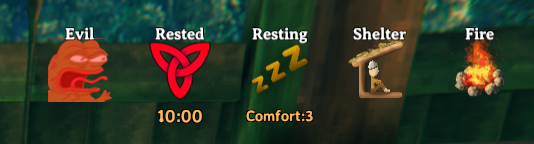
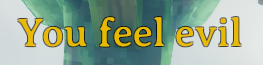
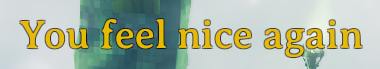

Custom Status Effects
Status Effects in Valheim are used in quite a lot of places. You can have attack status effects like Burning or Frozen. You have the guardian powers which are temporary status effects affecting the players stats. You also have status effects attached to items like the Megingjord Belt which adds more available carrying weight to the player. Adding of custom status effects is done through the ItemManager singleton class and JVLs abstraction CustomStatusEffect.
All status effects will always be loaded after all items. However, status effects will be loaded in the order that you call the AddStatusEffect function.
Example
Because status effects have a broad use range we will concentrate on a simple example to display the basic concept of adding custom status effects via Jötunn. For that we will instantiate a simple status effect in code and use Unity ScriptableObject to instantiate the Valheim base class "StatusEffect". That base class does not do very much except for displaying messages and displaying an icon for an active status effect. A "real" status effect is normally a subclass of StatusEffects which has methods for further coding of the effects (look at the vanilla SE_Stats or SE_Burning classes for example).
// Add new status effects
private void AddStatusEffects()
{
StatusEffect effect = ScriptableObject.CreateInstance<StatusEffect>();
effect.name = "EvilStatusEffect";
effect.m_name = "$evilsword_effectname";
effect.m_icon = AssetUtils.LoadSpriteFromFile("JotunnModExample/Assets/reee.png");
effect.m_startMessageType = MessageHud.MessageType.Center;
effect.m_startMessage = "$evilsword_effectstart";
effect.m_stopMessageType = MessageHud.MessageType.Center;
effect.m_stopMessage = "$evilsword_effectstop";
EvilSwordEffect = new CustomStatusEffect(effect, fixReference: false); // We dont need to fix refs here, because no mocks were used
ItemManager.Instance.AddStatusEffect(EvilSwordEffect);
}
In our JotunnModExample this effect is added as the equip effect to the "EvilSword" so it activates when equipping the sword from the inventory.
// Add our custom status effect to it
itemDrop.m_itemData.m_shared.m_equipStatusEffect = EvilSwordEffect.StatusEffect;
The result is an icon displaying that the status effect is active.

And also custom messages when the effect starts and ends.
 
Note that all texts are tokenized and translated ingame. The translations are also provided by Jötunn. Read the tutorial on Localizations for more information on that topic.